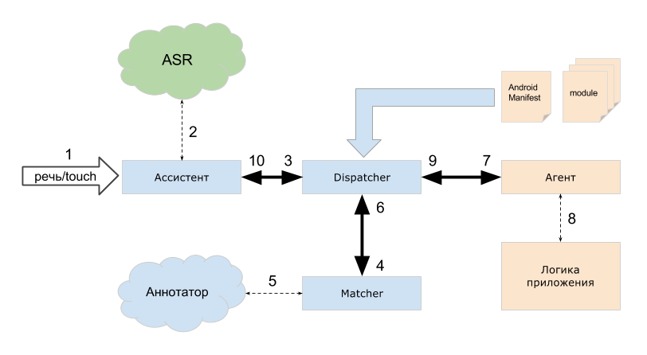

Приложение "Ассистент на русском" - это стандартное приложение под ОС Android, взаимодействующее с пользователем как с помощью речи, так и посредством графического интерфейса (GUI). Ассистент содержит набор собственных сервисов, которые так же реализованы с помощью данного API - мы называем их билтинами (built-in). APi предоставляет реализовать свои собственные (сторониие) сервисы, которые можно называть плагинами (plugins).
Каждый сервис - это набор из агентов, модулей и некоторой бизнес-логики. Агенты представляют собой надстройку над Android-сервисами, а взаимодействие между ассистентом и агентом происходит за счёт межпроцессной коммуникации (IPC).
Само приложение "Ассистент на русском" состоит из GUI и ядра, в функции которого входит диспетчеризация запросов от пользователя к нужному агенту и получение от агента результата (ов) для отображения пользователю и переключение диалогового контекста. Компонент, выполняющий эти операции (не зависящие от GUI) называется Dispatcher.
Таким образом, ассистент - это полностью модульная структура, разделяющая уровень представления (GUI), логику управления диалогом (Dispatcher) и сервисы (Агенты).
Ассистент взаимодействует с системой распознавания речи (ASR), позволяющей получить из пользовательской речи строку, которая затем обрабатывается специальным компонентом ядра - Матчером. Матчер реализует функцию NLP (процессинг натуральной речи), используя данные модулей, описывающих паттерны пользовательских речевых запросов. Результатом работы матчера является решение о том, какую команду какого агента из текущего скоупа и с какими параметрами (дерево разбора текста) необходимо выполнить.
Скоупами называются наборы модулей, доступных в данный момент времени пользователю. Такие наборы формируют диалоговый контекст.
Ассистент на русском использует сторонние решения ASR и полностью независим от конкретной реализации данной технологии.
Матчер в "Ассистенте на русском" реализует гибридное NLP, при котором для матчинга текста по паттернам используются данные из разных источников. Другими словами, матчер перед процессингом текста может получить данные из локальЫных БД или отправить строку на удалённые сервера, где хранятся большие объёмы данных. Эти сервера дополняют информацию о тексте (производят аннотирование) и возвращают эту информацию для процессинга локальному матчеру. Таким образом можно хранить некоторые данные на серверах (например, списки городов мира), а некоторые локально на устройстве (список контактов или названия приложений).
Таким образом, вы можете сформировать паттерны различными способами, что позволяет реализовать сколь угодно сложный вид речевой коммуникации с пользователем:
uri)О том, как использовать аннотирование текста на удалённых серверах, читайте в разделе контент-провайдеры.
Это позволяет масштабировать разрабатываемую систему так, что становится возможным, с одной стороны, не зависеть от способов хранения необходимых данных, а с другой - не описывать все возможные сущности, а ограничиться только теми, которые действительно необходимы для реализации логики приложения.
Как было сказано выше, ядро ассистента взаимодействует с агентом с помощью IPC. Агент, по сути, выполняет роль программного интерфейса между ассистентом и бизнес-логикой приложения. Каждый агент описывается в манифесте приложения AndroidManifest.xml, и ассистент загружает его основной модуль каждый раз при "холодном" старте или динамически при установке приложения.
Далее при каждом запросе пользователя к агенту ассистент вызывает методы абстрактного класса AssistantAgent, которые должны быть реализованы конкретным агентом. Ассистент ведёт историю запросов пользователя и привязывает ответ(ы) от агента на запрос к конкретному элементу в истории.
Каждый ответ от агента - это некоторый контент, отображаемый в GUI ассистента и, опционально, инструкция по управлению диалогом (подробнее в разделе Scopes).
Подробнее о видах контента, генерируемого агентами, читайте в разделе баблы.

Синим в этой схеме обозначаются компоненты, реализованные в Ассистенте. Розовым - компоненты, которые необходимо реализовать разработчику в своем приложении. Зеленым - сторонние компоненты
В общем случае, после успешной загрузки модулей вашего приложения ассистентом, схема взаимодействия пользователя с агентом выглядит так:
AssistantAgent, взаимодействуя с логикой приложения. Реализация этого взаимодействия ничем не ограничена и зависит только от разработчика приложения.goBackground), а затем обновить уже отправленные ранее ответ.С точки зрения способа реализации взаимодействия агента с ядром ассистента, существует несколько подходов.
Этот вид реализации агентов используется для сервисов самого "Ассистента на русском" или любого другого приложения, реализованного на его ядре (не описывается в данном документе).
Этот вид используется для реализации взаимодействия вашего (стороннего) приложения с ассистентом. Агент реализуется на стороне вашего приложения и предоставляет интерфейс к нему. Такой агент может отображать необходимый GUI внутри ассистента посредством баблов.
Ваше приложение при этом не обязано иметь собственный touch GUI, иконку для лаунчера и т.д. В таком случае, оно будет выглядеть как plug-in к ассистенту.